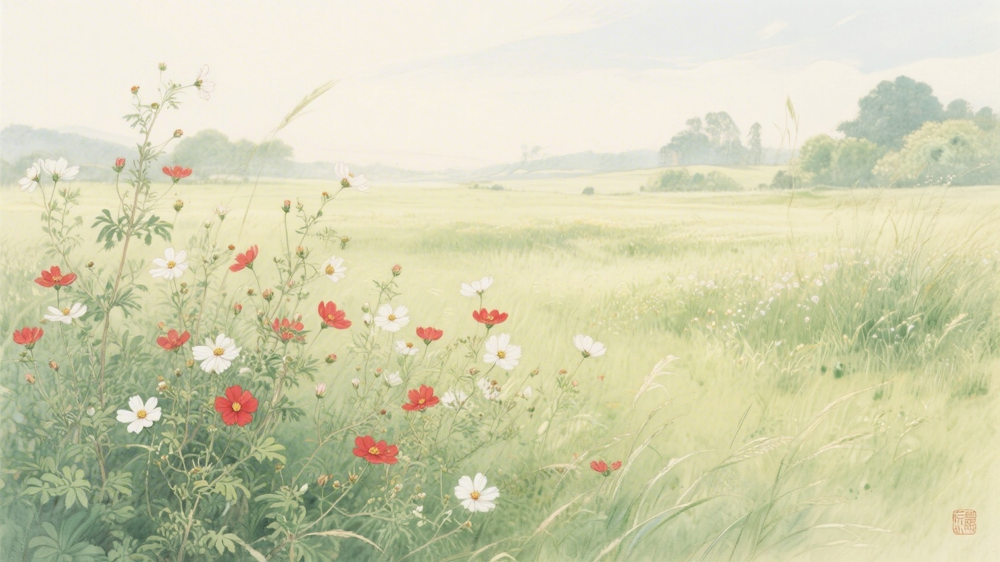
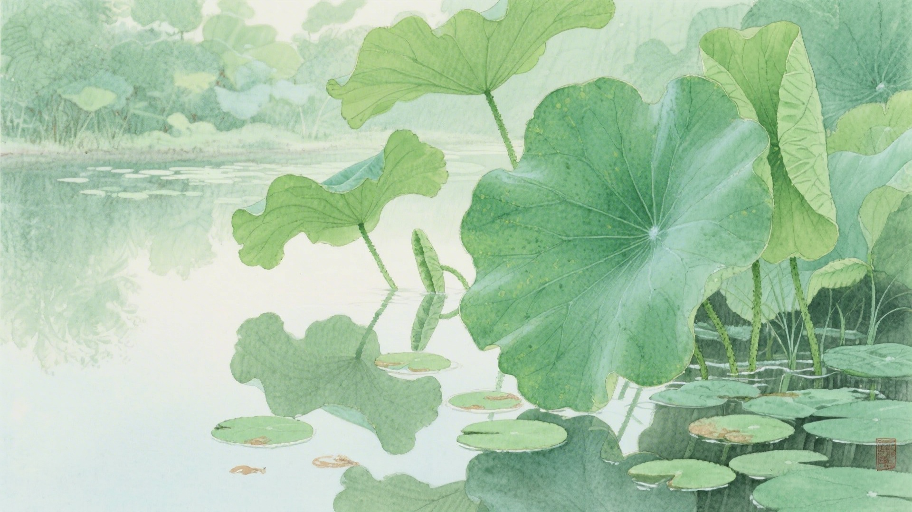
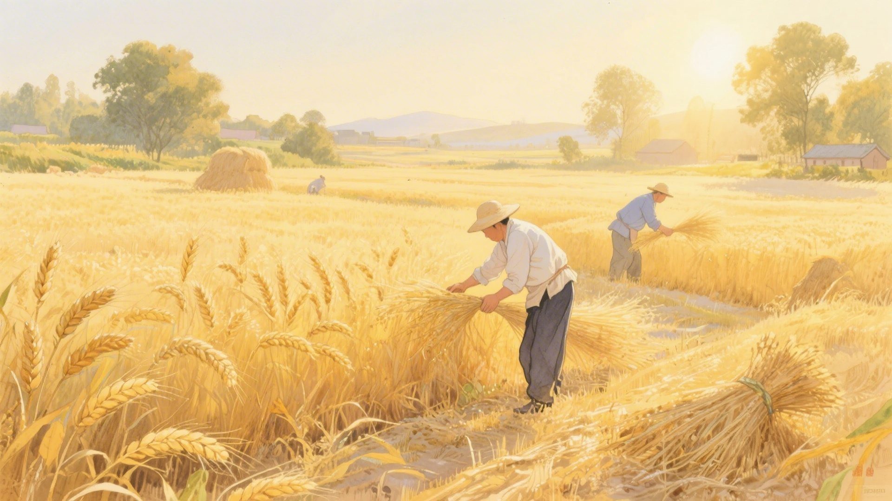
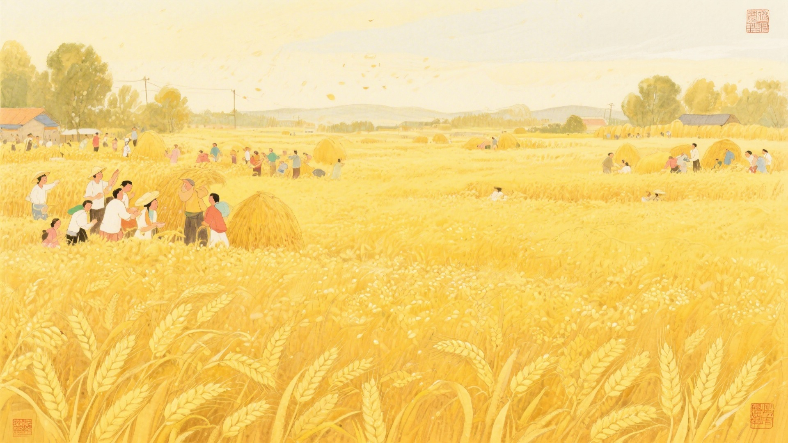
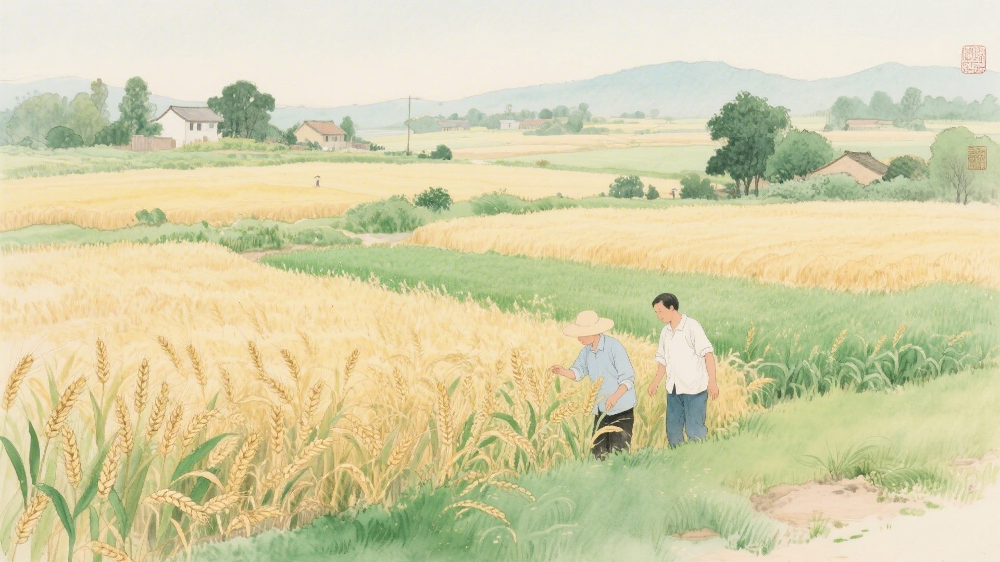

《中国传统色：故宫里的色彩美学》一书中为什么把下面这些颜色归入小满节气？
彤管、渥赭、唇脂、朱孔阳
石发、漆姑、芰荷、官绿
仙米、黄螺、降真香、远志
嫩鹅黄、鞠衣、郁金裙、黄流
小满时节，苦菜开花了，靡草枯死了，麦子黄了。古人说小满有三候：苦菜秀，靡草死，麦秋至。这十六种颜色，便从这三候里来。
小满的"满"，是麦粒饱满的满，不是溢出来的满。将满未满，恰到好处。颜色也是这样，不浓不淡，不急不躁，站在夏天中间的位置上。
对应：小满节气一候"苦菜秀"的起、承、转、合四色。
色彩意象：苦菜开花，红白相间。
从粉红到深红，是苦菜从初开到盛放的颜色变化，也是小满时节田野间最生动的色彩。

对应：小满节气二候"靡草死"的起、承、转、合四色。
色彩意象：靡草枯萎，荷叶初生。
从嫩绿到深绿，是荷叶从初出到舒展的色彩变化，也是小满时节水塘里最清新的风景。

对应：小满节气三候"麦秋至"的起、承、转、合四色（其一）。
色彩意象：麦子渐黄，丰收在望。
从淡黄到深褐，是麦子从灌浆到成熟的色彩变化，也是小满时节最令人期待的丰收预告。

对应：小满节气三候"麦秋至"的起、承、转、合四色（其二）。
色彩意象：麦收时节，金黄遍地。
从嫩黄到金黄，是麦浪从泛黄到成熟的色彩变化，也是小满时节最耀眼的田园画卷。

小满这个名字起得好。满而不溢，盈而不亏，是庄稼最好的状态，也是人生最好的状态。颜色也是这样，不浓不淡，该红的时候红，该黄的时候黄，该绿的时候绿。

颜色也懂得中庸之道。它们站在春天的尾巴和夏天的头中间，看看春天，看看夏天，然后把自己的位置定在正中间。不偏不倚，不前不后。
（以上解读不代表原书观点）